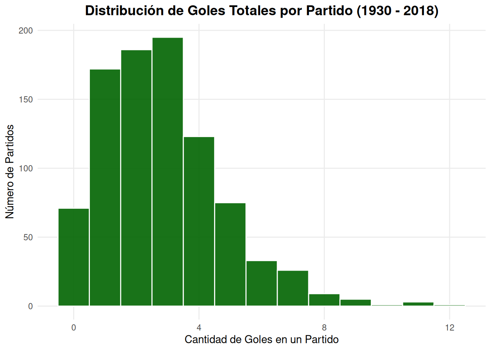
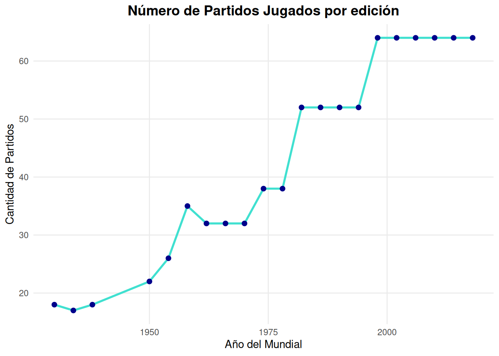
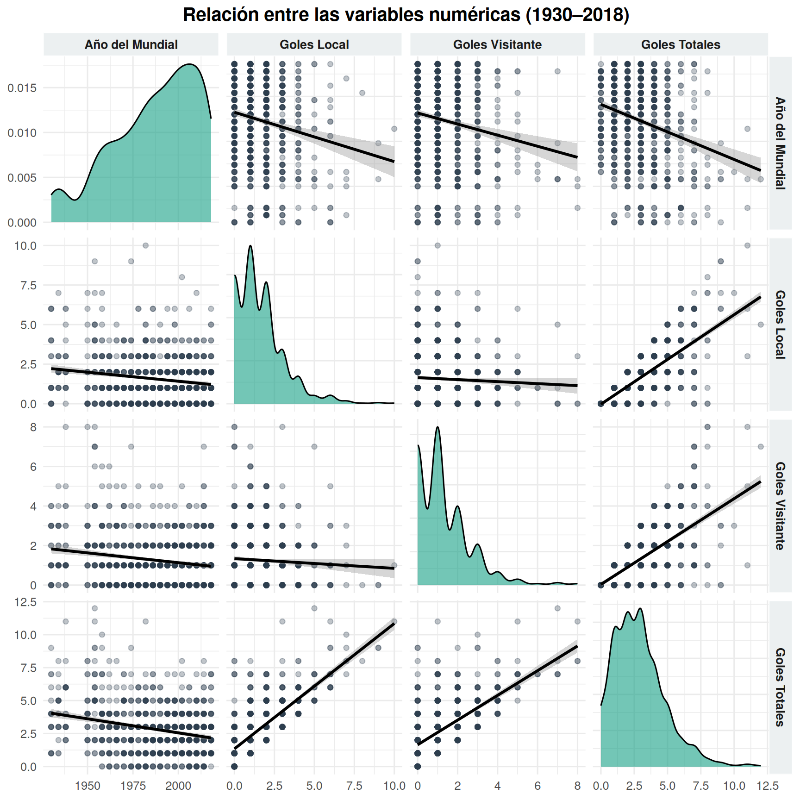
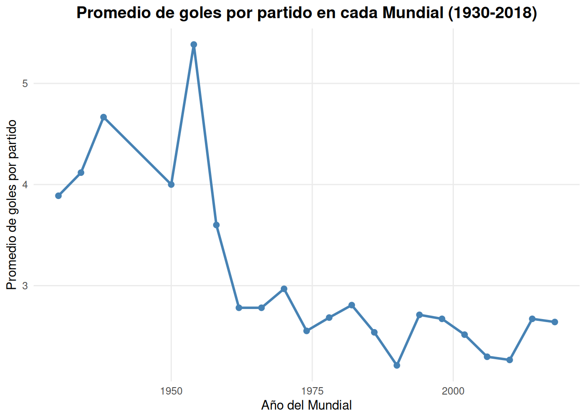
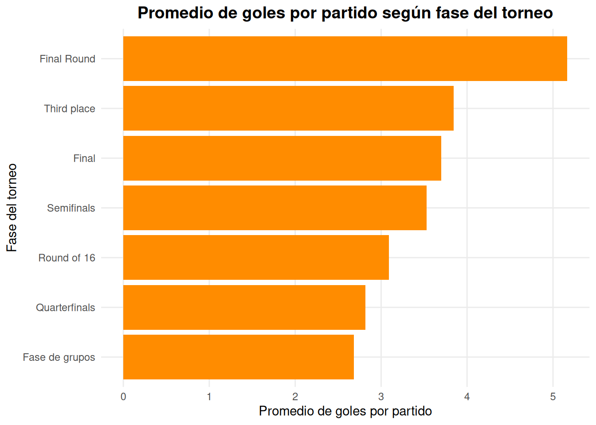
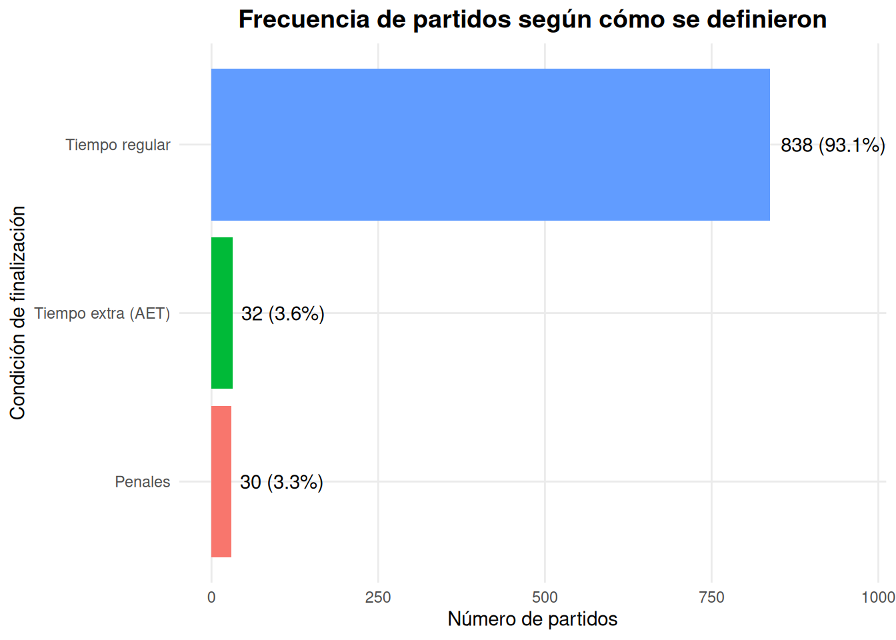
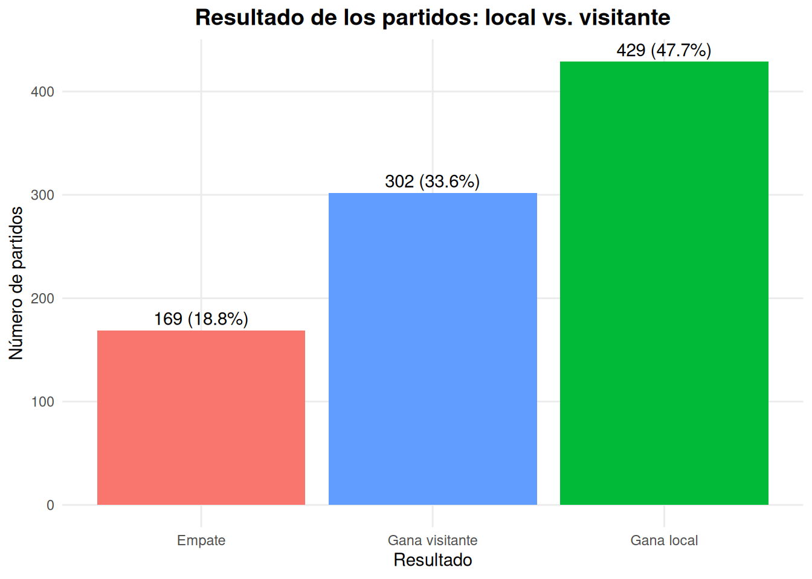
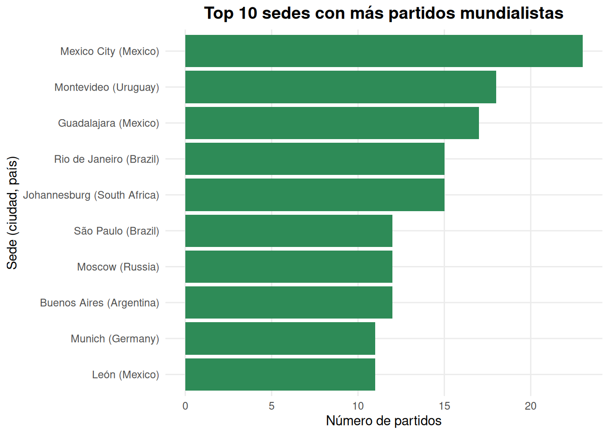

Code
Partidos <- read.csv("data/wcmatches.csv")Autores: Samuel Márquez, Emiliano Almaraz, Emiliano Sánchez, Gerónimo Chávez.
La Copa Mundial de la FIFA es uno de los eventos deportivos más importantes a nivel internacional, reuniendo a selecciones nacionales de distintos continentes desde 1930. A lo largo de sus ediciones se han registrado miles de datos relacionados con los partidos disputados, como los equipos participantes, las sedes, las fases del torneo, los resultados obtenidos y las fechas en que se llevaron a cabo.
En este proyecto se analiza un conjunto de datos que contiene información de los partidos oficiales de las Copas del Mundo de la FIFA disputadas entre 1930 y 2018. El objetivo es aplicar técnicas de manipulación, exploración y visualización de datos utilizando R y Quarto para identificar patrones y responder preguntas de investigación relacionadas con el desempeño de los equipos, la distribución de goles y el desarrollo histórico de los torneos.
Para ello, primero se realiza una descripción del conjunto de datos y un proceso de preparación que incluye la transformación de variables y la creación de nuevas características. Posteriormente, se desarrollan diferentes análisis estadísticos y visualizaciones que permiten responder las preguntas planteadas y obtener una mejor comprensión del comportamiento de los datos.
El proyecto utiliza los datos del archivo “wcmatches.csv”, disponible en TidyTuesday: Link al repositorio en Github.
El conjunto de datos utilizado en este proyecto contiene información histórica de los partidos disputados en la Copa Mundial de la FIFA entre 1930 y 2018. La base de datos fue obtenida del repositorio de TidyTuesday, el cual recopila conjuntos de datos públicos para la realización de ejercicios de análisis y visualización de datos. Cada registro representa un partido oficial e incluye información relacionada con la edición del torneo, la sede, los equipos participantes, el marcador final y otras variables de interés.
Partidos <- read.csv("data/wcmatches.csv")El archivo fue importado a R mediante la función read.csv(), almacenándose en el objeto Partidos el cual sera utilizado durante todo el analisis
dim(Partidos)[1] 900 15El conjunto de datos contiene 900 observaciones y 15 variables. Cada observación representa un partido oficial correspondiente a alguna edición de la Copa Mundial de la FIFA.
head(Partidos) year country city stage home_team away_team home_score away_score
1 1930 Uruguay Montevideo Group 1 France Mexico 4 1
2 1930 Uruguay Montevideo Group 4 Belgium United States 0 3
3 1930 Uruguay Montevideo Group 2 Brazil Yugoslavia 1 2
4 1930 Uruguay Montevideo Group 3 Peru Romania 1 3
5 1930 Uruguay Montevideo Group 1 Argentina France 1 0
6 1930 Uruguay Montevideo Group 1 Chile Mexico 3 0
outcome win_conditions winning_team losing_team date month dayofweek
1 H France Mexico 1930-07-13 Jul Sunday
2 A United States Belgium 1930-07-13 Jul Sunday
3 A Yugoslavia Brazil 1930-07-14 Jul Monday
4 A Romania Peru 1930-07-14 Jul Monday
5 H Argentina France 1930-07-15 Jul Tuesday
6 H Chile Mexico 1930-07-16 Jul WednesdayLas columnas con las que cuenta el data-frame son:
Las variables incluidas en el conjunto de datos son las siguientes:
year (int): Año en el que se disputó la edición de la Copa Mundial de la FIFA.
country (chr): País anfitrión donde se celebró el Mundial.
city (chr): Ciudad en la que se disputó el partido.
stage (chr): Fase del torneo en la que se jugó el partido. En la fase de grupos también indica el grupo correspondiente.
home_team (chr): Selección considerada como equipo local.
away_team (chr): Selección considerada como equipo visitante.
home_score (int): Número de goles anotados por el equipo local.
away_score (int): Número de goles anotados por el equipo visitante.
outcome (chr): Resultado del encuentro, donde H indica victoria del equipo local, A victoria del equipo visitante y D empate.
win_conditions (chr): Indica si el partido se definió en tiempo extra (AET) o mediante tanda de penales.
winning_team (chr): Nombre del equipo ganador. En caso de empate, el valor es NA.
losing_team (chr): Nombre del equipo perdedor. En caso de empate, el valor es NA.
date (Date): Fecha en la que se disputó el partido (AA/MM/DD).
month (chr): Mes en el que se disputó el encuentro.
dayofweek (chr): Día de la semana en que se jugó el partido.
Una vez descritas las principales características del conjunto de datos, se procede a realizar su preparación y transformación con el fin de garantizar que la información se encuentre en el formato adecuado para el análisis y la generación de visualizaciones.
Antes de realizar el análisis exploratorio, fue necesario preparar el conjunto de datos para asegurar que las variables estuvieran en el formato adecuado y facilitar su procesamiento. Esta etapa incluyó la conversión de tipos de datos y la creación de una nueva variable que resume la cantidad total de goles anotados en cada partido.
Partidos$date <- as.Date(Partidos$date, format = "%Y/%m/%d")La variable date fue convertida al tipo Date, lo que permite manipularla correctamente para realizar análisis temporales y facilita su interpretación dentro del conjunto de datos.
dias_ordenados <- c("Monday", "Tuesday", "Wednesday", "Thursday", "Friday", "Saturday", "Sunday")
Partidos$dayofweek <- factor(Partidos$dayofweek, levels = dias_ordenados)La variable dayofweek fue convertida a un factor ordenado, estableciendo el orden cronológico de los días de la semana (de lunes a domingo). Esta transformación garantiza que, al generar tablas y visualizaciones, los días aparezcan en una secuencia lógica y no en orden alfabético, facilitando una interpretación más clara de los resultados.
Se creó la variable goles_totales, la cual corresponde a la suma de los goles anotados por el equipo local y el equipo visitante en cada partido. Esta variable simplifica el análisis de la producción ofensiva durante las distintas ediciones de la Copa Mundial.
Partidos$goles_totales <- Partidos$home_score + Partidos$away_score
head(Partidos$goles_totales)[1] 5 3 3 4 1 3La creación de esta variable permite analizar de manera directa la cantidad total de goles por partido, sin necesidad de calcularla repetidamente durante las distintas etapas del análisis. Además, facilita la elaboración de visualizaciones y comparaciones entre las diferentes ediciones de la Copa Mundial.
str(Partidos)'data.frame': 900 obs. of 16 variables:
$ year : int 1930 1930 1930 1930 1930 1930 1930 1930 1930 1930 ...
$ country : chr "Uruguay" "Uruguay" "Uruguay" "Uruguay" ...
$ city : chr "Montevideo" "Montevideo" "Montevideo" "Montevideo" ...
$ stage : chr "Group 1" "Group 4" "Group 2" "Group 3" ...
$ home_team : chr "France" "Belgium" "Brazil" "Peru" ...
$ away_team : chr "Mexico" "United States" "Yugoslavia" "Romania" ...
$ home_score : int 4 0 1 1 1 3 0 0 1 6 ...
$ away_score : int 1 3 2 3 0 0 4 3 0 3 ...
$ outcome : chr "H" "A" "A" "A" ...
$ win_conditions: chr "" "" "" "" ...
$ winning_team : chr "France" "United States" "Yugoslavia" "Romania" ...
$ losing_team : chr "Mexico" "Belgium" "Brazil" "Peru" ...
$ date : Date, format: NA NA ...
$ month : chr "Jul" "Jul" "Jul" "Jul" ...
$ dayofweek : Factor w/ 7 levels "Monday","Tuesday",..: 7 7 1 1 2 3 4 4 5 6 ...
$ goles_totales : int 5 3 3 4 1 3 4 3 1 9 ...Una vez realizadas las transformaciones, se verificó nuevamente la estructura del conjunto de datos para confirmar que los cambios se aplicaron correctamente. En esta versión final, la variable date se encuentra almacenada como tipo Date y se incorpora la nueva variable goles_totales, la cual será utilizada en los análisis posteriores.
Una vez preparado el conjunto de datos, se realizó un análisis exploratorio con el propósito de comprender el comportamiento general de las principales variables antes de responder las preguntas de investigación. Esta etapa permite identificar patrones, tendencias y posibles relaciones entre los datos, facilitando la interpretación de los resultados obtenidos posteriormente.
Para ello, se emplearon distintas técnicas de visualización y análisis descriptivo que permiten conocer la distribución de los goles anotados, la evolución del número de partidos disputados en cada edición de la Copa Mundial y la relación existente entre las principales variables numéricas del conjunto de datos.
grafica_goles <- ggplot(Partidos, aes(x = goles_totales)) +
geom_histogram(binwidth = 1, fill = "darkgreen", color = "white", alpha = 0.9) +
labs(
title = "Distribución de Goles Totales por Partido (1930 - 2018)",
x = "Cantidad de Goles en un Partido",
y = "Número de Partidos"
) +
theme_minimal() +
theme(
plot.title = element_text(face = "bold", size = 14, hjust = 0.5),
panel.grid.minor = element_blank()
)
grafica_goles
La Figura 1 muestra la distribución del número total de goles anotados por partido en las Copas Mundiales de la FIFA disputadas entre 1930 y 2018. Se observa que la mayor parte de los encuentros finalizaron con entre dos y tres goles, mientras que los partidos con marcadores muy elevados (seis o más goles) fueron considerablemente menos frecuentes. Esta distribución presenta una ligera asimetría hacia la derecha, indicando que los encuentros con una alta producción ofensiva representan casos excepcionales dentro del conjunto de datos.
grafica_partidos <- Partidos %>%
count(year) %>%
ggplot(aes(x = year, y = n)) +
geom_line(color = "turquoise", linewidth = 1) +
geom_point(color = "darkblue", size = 2) +
labs(
title = "Número de Partidos Jugados por edición",
x = "Año del Mundial",
y = "Cantidad de Partidos"
) +
theme_minimal() +
theme(
plot.title = element_text(face = "bold", size = 14, hjust = 0.5),
panel.grid.minor = element_blank()
)
grafica_partidos
La Figura 2 presenta la evolución del número de partidos disputados en cada edición de la Copa Mundial. Se observa un incremento progresivo conforme avanzan los años, especialmente en las ediciones más recientes. Este comportamiento está relacionado con la expansión del torneo y el aumento en el número de selecciones participantes, factores que han incrementado el total de encuentros disputados en cada Mundial.
datos_numericos <- Partidos[, c("year", "home_score", "away_score", "goles_totales")]
colnames(datos_numericos) <- c("Año del Mundial", "Goles Local", "Goles Visitante", "Goles Totales")
matriz_correlacion <- ggpairs(
datos_numericos,
upper = list(continuous = wrap("smooth", alpha = 0.3, color = "#2c3e50")),
lower = list(continuous = wrap("smooth", alpha = 0.3, color = "#2c3e50")),
diag = list(continuous = wrap("densityDiag", fill = "#16a085", alpha = 0.6)),
title = "Relación entre las variables numéricas (1930–2018)"
) +
theme_minimal(base_size = 12) +
theme(
plot.title = element_text(face = "bold", size = 15, hjust = 0.5),
strip.background = element_rect(fill = "#ecf0f1", color = "white"),
strip.text = element_text(face = "bold", size = 10)
)
matriz_correlacion
La Figura 3 presenta una matriz de dispersión de las principales variables numéricas del conjunto de datos. En la diagonal se muestra la distribución de cada variable mediante curvas de densidad, mientras que fuera de la diagonal se representan las relaciones entre pares de variables utilizando diagramas de dispersión y curvas de suavizado.
De manera general, se observa una asociación lineal negativa débil entre el año del torneo y la cantidad de goles anotados, lo que sugiere una ligera disminución en el promedio de goles conforme avanzan las ediciones de la Copa Mundial. Asimismo, las variables home_score, away_score y goles_totales presentan asociaciones positivas, resultado esperado debido a que la variable goles_totales se obtiene a partir de la suma de los goles anotados por ambos equipos.
Como complemento del análisis visual, se calcularon los coeficientes de correlación de Pearson para cuantificar la intensidad de las relaciones lineales observadas.
matriz_pearson <- round(cor(datos_numericos), 3)
matriz_pearson Año del Mundial Goles Local Goles Visitante Goles Totales
Año del Mundial 1.000 -0.177 -0.175 -0.256
Goles Local -0.177 1.000 -0.056 0.734
Goles Visitante -0.175 -0.056 1.000 0.638
Goles Totales -0.256 0.734 0.638 1.000Los coeficientes de correlación de Pearson permiten confirmar las tendencias observadas en la matriz de dispersión. En particular, se aprecia una correlación negativa de baja magnitud entre el año del torneo y las variables relacionadas con la cantidad de goles, mientras que las correlaciones positivas entre home_score, away_score y goles_totales reflejan la relación matemática existente entre estas variables.
Es importante señalar que esta matriz de correlación tiene un carácter exploratorio. Su objetivo no es establecer relaciones de causalidad, sino ofrecer una visión general del comportamiento de las variables numéricas e identificar posibles patrones que puedan analizarse con mayor profundidad en las preguntas de investigación.
En conjunto, el análisis exploratorio permitió obtener una visión general del comportamiento del conjunto de datos, identificar patrones relevantes y comprender las relaciones entre sus principales variables numéricas. Estas observaciones constituyen el punto de partida para el desarrollo de las preguntas de investigación, en las cuales se profundiza el análisis mediante visualizaciones y procedimientos específicos.
Variables: year, goles_totales
goles_por_anio <- Partidos %>%
group_by(year) %>%
summarise(promedio_goles = mean(goles_totales), .groups = "drop")
ggplot(goles_por_anio, aes(x = year, y = promedio_goles)) +
geom_line(color = "steelblue", linewidth = 1) +
geom_point(color = "steelblue", size = 2) +
labs(
title = "Promedio de goles por partido en cada Mundial (1930-2018)",
x = "Año del Mundial",
y = "Promedio de goles por partido"
) +
theme_minimal() +
theme(
plot.title = element_text(face = "bold", size = 14, hjust = 0.5),
panel.grid.minor = element_blank()
)
Explicación: El promedio de goles por partido no ha sido constante: se observan picos muy altos en las primeras ediciones (1930-1950), con valores que superan los 4 goles por partido, y una tendencia general a la baja desde entonces. Desde los años 90 el promedio se estabiliza entre 2.5 y 3 goles por partido, lo que coincide con cambios tácticos y reglamentarios en el fútbol moderno frente a los esquemas más ofensivos de mediados del siglo XX.
Variables: stage, goles_totales
Partidos <- Partidos %>%
mutate(stage_agrupado = ifelse(
grepl("^Group", trimws(stage)),
"Fase de grupos",
trimws(stage)
))
goles_por_fase <- Partidos %>%
group_by(stage_agrupado) %>%
summarise(promedio_goles = mean(goles_totales), .groups = "drop") %>%
arrange(desc(promedio_goles))
ggplot(goles_por_fase,
aes(x = reorder(stage_agrupado, promedio_goles), y = promedio_goles)) +
geom_col(fill = "darkorange") +
coord_flip() +
labs(
title = "Promedio de goles por partido según fase del torneo",
x = "Fase del torneo",
y = "Promedio de goles por partido"
) +
theme_minimal() +
theme(
plot.title = element_text(face = "bold", size = 14, hjust = 0.5),
panel.grid.minor = element_blank()
)
Explicación: Las fases más avanzadas y decisivas del torneo (finales, semifinales y el partido por el tercer lugar) muestran promedios de goles más altos que la fase de grupos. Esto puede explicarse porque en estas instancias se enfrentan selecciones de mayor nivel ofensivo y algunos partidos se definen en tiempo extra, lo que añade goles. La fase de grupos presenta el promedio más bajo, posiblemente por el carácter más conservador de equipos que buscan asegurar puntos antes de arriesgar.
Variable: win_conditions
condiciones <- Partidos %>%
mutate(condicion = case_when(
win_conditions == "" | is.na(win_conditions) ~ "Tiempo regular",
grepl("penalties", win_conditions, ignore.case = TRUE) ~ "Penales",
grepl("AET", win_conditions, ignore.case = TRUE) ~ "Tiempo extra (AET)",
TRUE ~ "Otro"
)) %>%
count(condicion) %>%
mutate(porcentaje = round(100 * n / sum(n), 1))
ggplot(condiciones, aes(x = reorder(condicion, n), y = n, fill = condicion)) +
geom_col(show.legend = FALSE) +
geom_text(aes(label = paste0(n, " (", porcentaje, "%)")), hjust = -0.1) +
coord_flip() +
labs(
title = "Frecuencia de partidos según cómo se definieron",
x = "Condición de finalización",
y = "Número de partidos"
) +
theme_minimal() +
expand_limits(y = max(condiciones$n) * 1.15) +
theme(
plot.title = element_text(face = "bold", size = 14, hjust = 0.5),
panel.grid.minor = element_blank()
)
Explicación: La gran mayoría de los partidos (más del 90%) se resuelven en tiempo regular. Los partidos con tiempo extra son una minoría, y dentro de esos solo una fracción aún menor termina en penales. Esto es consistente con la estructura del torneo: el tiempo extra y los penales solo son posibles en partidos de eliminación directa, mientras que la fase de grupos, que concentra más de la mitad de los partidos, siempre se resuelve en 90 minutos.
Variable: outcome
resultados <- Partidos %>%
mutate(resultado = case_when(
outcome == "H" ~ "Gana local",
outcome == "A" ~ "Gana visitante",
outcome == "D" ~ "Empate",
TRUE ~ "Otro"
)) %>%
count(resultado) %>%
mutate(porcentaje = round(100 * n / sum(n), 1))
ggplot(resultados, aes(x = reorder(resultado, n), y = n, fill = resultado)) +
geom_col(show.legend = FALSE) +
geom_text(aes(label = paste0(n, " (", porcentaje, "%)")), vjust = -0.4) +
labs(
title = "Resultado de los partidos: local vs. visitante",
x = "Resultado",
y = "Número de partidos"
) +
theme_minimal() +
theme(
plot.title = element_text(face = "bold", size = 14, hjust = 0.5),
panel.grid.minor = element_blank()
)
Explicación: Los equipos designados como “locales” en el dataset ganan en aproximadamente la mitad de los partidos, una proporción más alta que los visitantes y que los empates. Es importante aclarar que en el Mundial el concepto de “local” no siempre equivale a jugar en casa (salvo para el país anfitrión); suele reflejar el orden en que se registró el partido. Aun así, el patrón sugiere una ligera ventaja asociada a esa designación.
Variables: city, country
top_sedes <- Partidos %>%
mutate(sede = paste0(city, " (", country, ")")) %>%
count(sede, sort = TRUE) %>%
slice_head(n = 10)
ggplot(top_sedes, aes(x = reorder(sede, n), y = n)) +
geom_col(fill = "seagreen") +
coord_flip() +
labs(
title = "Top 10 sedes con más partidos mundialistas",
x = "Sede (ciudad, país)",
y = "Número de partidos"
) +
theme_minimal() +
theme(
plot.title = element_text(face = "bold", size = 14, hjust = 0.5),
panel.grid.minor = element_blank())
Explicación: La Ciudad de México lidera como la sede con más partidos mundialistas en la historia, resultado directo de haber albergado dos ediciones completas del torneo (1970 y 1986). Le siguen ciudades como Montevideo (sede de la primera Copa del Mundo en 1930) y Guadalajara, también beneficiada por las dos ediciones mexicanas. El ranking refleja sobre todo qué países han sido anfitriones en más de una ocasión, más que un patrón relacionado con el desempeño futbolístico de esas sedes.